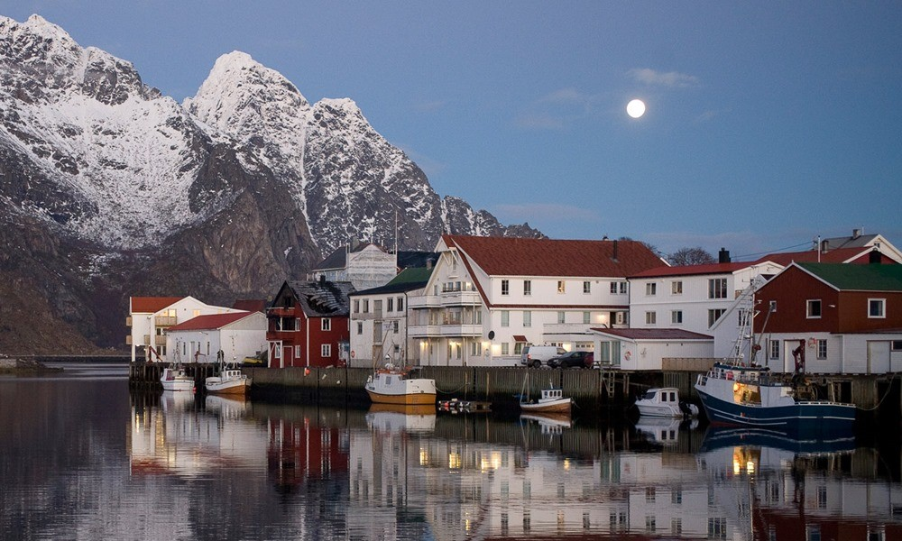

Norway - My First Heritage
Home
Norwegian Heritage
Brazilian Heritage
American Heritage
Information about Norway and Andøya
For more information about Andøya:
Andøya, Norway
Andøya Tourist Guide
Andøya Space Center

Fishing Port, Andenes - Andøya, Norway.
For more information about Norway:
Wikipedia article about Norway
Fun facts about Norway
Living in Norway
Norwegian Fjords